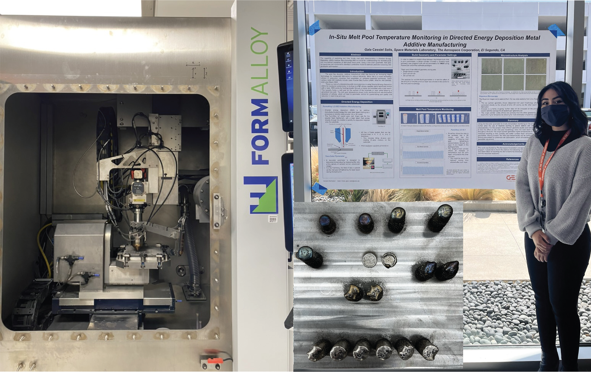
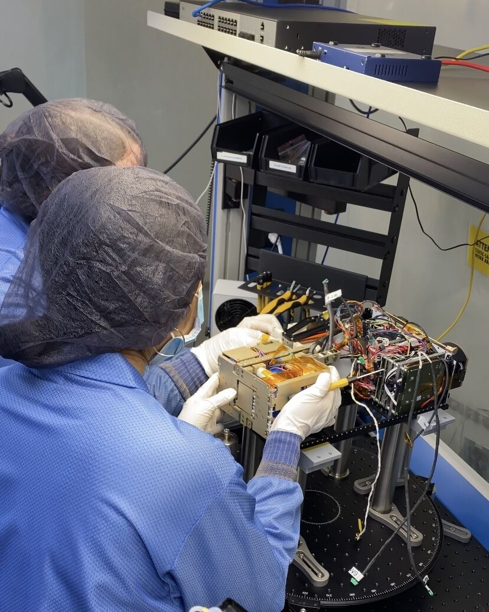
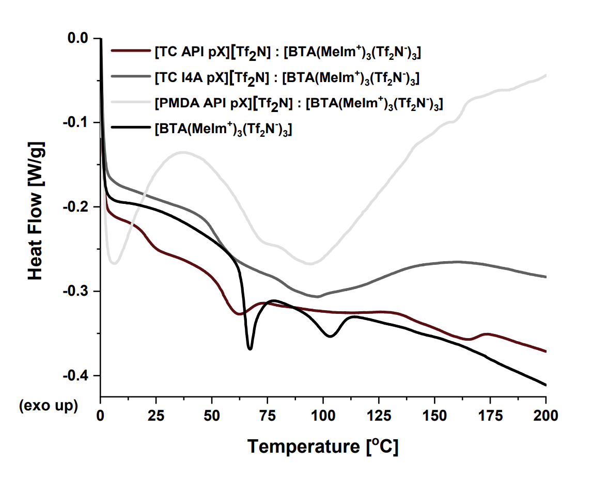
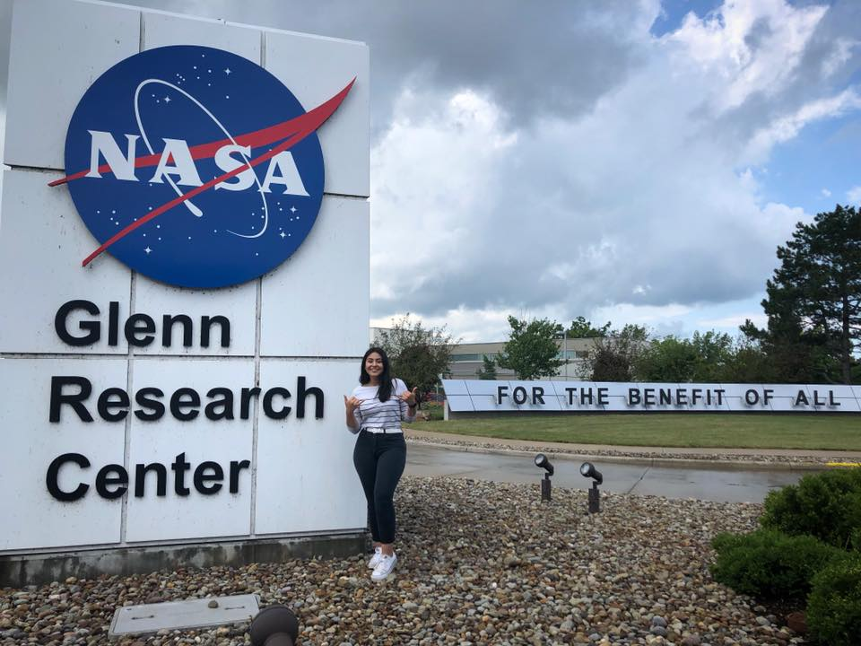
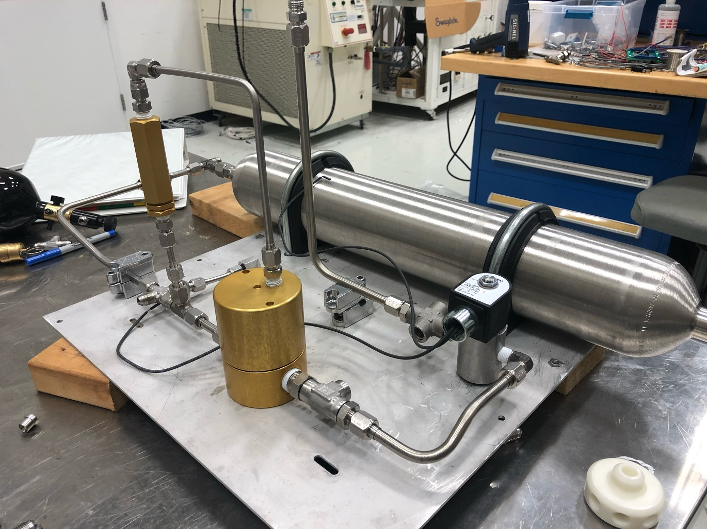

Internships
NASA Marshall Space Flight Center
June 2025 – Present | Huntsville, AL
Applied two-color thermography for melt pool monitoring on NASA’s Cold Metal Transfer (CMT) WAAM system for Inconel 718 and aluminum alloys. Assisted with process monitoring on additional directed energy deposition systems using regolith simulants.
- In-Situ Thermal Monitoring
- Metal Additive Manufacturing
- Wire-Arc Additive Manufacturing
The Aerospace Corporation
June 2022 – August 2022 | El Segundo, CA
Captured in-situ temperature data on powder-fed DED parts to study porosity and hardness. Conducted metallography and correlated PDAS, SDAS, and porosity with thermal signatures.
- DED Process Monitoring
- Metallography
- Hardness Correlation

MIT Lincoln Laboratory
January 2022 – May 2022 | Lexington, MA
Assisted in CubeSat deployment hardware testing under thermal extremes. Created and validated designs for launch survivability.
- CubeSat Design
- Thermal Testing
- SolidWorks CAD

Launcher (acquired by Vast)
May 2021 – August 2021 | Hawthorne, CA
Operated a VELO3D LPBF system and supported thermal channel design for the Orbiter engine. Created PLA gimbal mockups for payload deployment concepts.
- VELO3D LPBF Operations
- Orbiter Engine Design
- Thermal Channel Optimization

KCNSC Honeywell FM&T
June 2020 – August 2020 | Kansas City, MO
Designed fastening tools for LPBF manufacturing and evaluated surface roughness changes using profilometry. Contributed to additive manufacturing machinability documentation.
- LPBF Tool Design
- Deburr & Profilometry
- Process Documentation
NASA Marshall Space Flight Center
January 2020 – May 2020 | Huntsville, AL
Characterized thermal behavior of ionic polyimides for in-space additive manufacturing.
- DSC Characterization
- TGA Characterization
- TMA Characterization
Peer-reviewed publication: O’Harra, K.E., Noll, D.M., Kammakakam, I., DeVriese, E.M., Solis, G., Jackson, E.M., Bara, J.E. (2020). “Designing Imidazolium Poly(amide-amide) and Poly(amide-imide) Ionenes.” Polymers, 12(6):1254.

NASA Glenn Research Center
June 2019 – August 2019 | Cleveland, OH
Analyzed thermal performance of propulsion components and contributed to safety documentation for crewed spaceflight-related systems.
- Propulsion Systems
- Thermal Analysis
- Risk Evaluation

NASA Marshall Space Flight Center
January 2019 – May 2019 | Huntsville, AL
Add your project summary here once you are ready. This can be updated later to match the style of the rest of the page.
